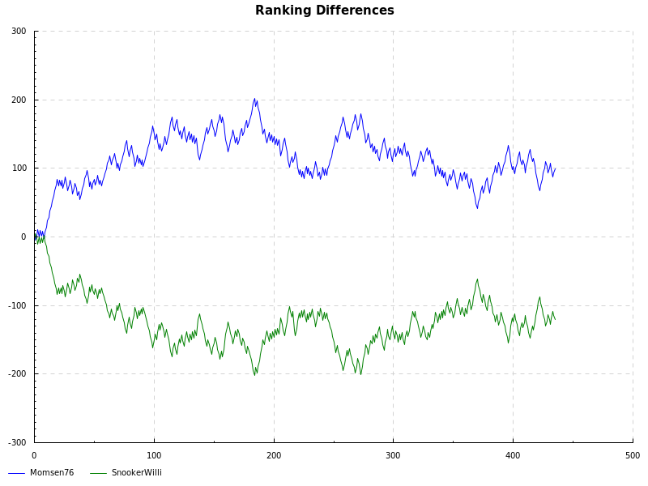

Momsen76 vs SnookerWilli

14.4.2017
| 10:51 | Momsen76 | 4784 | 15 | SnookerWilli | 4725 | 58 |
| 10:36 | Momsen76 | 4791 | 18 | SnookerWilli | 4717 | 43 |
| 10:23 | Momsen76 | 4802 | 45 | SnookerWilli | 4707 | 20 |
19.2.2017
| 21:05 | Momsen76 | 4810 | 35 | SnookerWilli | 4716 | 43 |
| 20:54 | Momsen76 | 4821 | 44 | SnookerWilli | 4705 | 9 |
| 20:35 | Momsen76 | 4812 | 42 | SnookerWilli | 4714 | 40 |
| 20:17 | Momsen76 | 4803 | 40 | SnookerWilli | 4724 | 23 |
| 20:00 | Momsen76 | 4793 | 15 | SnookerWilli | 4733 | 11 |
| 19:49 | Momsen76 | 4783 | 37 | SnookerWilli | 4743 | 7 |
28.1.2017
| 13:45 | Momsen76 | 4857 | 13 | SnookerWilli | 4775 | 25 |
| 13:25 | Momsen76 | 4867 | 27 | SnookerWilli | 4764 | 22 |
| 13:09 | Momsen76 | 4878 | 27 | SnookerWilli | 4754 | 13 |
14.1.2017
| 12:34 | Momsen76 | 4920 | 8 | SnookerWilli | 4746 | 18 |
| 12:21 | Momsen76 | 4931 | 17 | SnookerWilli | 4735 | 27 |
8.1.2017
| 14:04 | Momsen76 | 4985 | 13 | SnookerWilli | 4717 | 0 |
| 13:44 | Momsen76 | 4981 | 39 | SnookerWilli | 4721 | 18 |
| 13:30 | Momsen76 | 4992 | 20 | SnookerWilli | 4710 | 18 |
| 13:21 | Momsen76 | 4984 | 62 | SnookerWilli | 4718 | 0 |
| 13:08 | Momsen76 | 4978 | 14 | SnookerWilli | 4724 | 27 |
9.10.2016
| 16:01 | Momsen76 | 4824 | 16 | SnookerWilli | 4697 | 47 |
| 15:49 | Momsen76 | 4831 | 28 | SnookerWilli | 4690 | 22 |
| 15:36 | Momsen76 | 4842 | 28 | SnookerWilli | 4679 | 15 |
25.9.2016
| 11:26 | Momsen76 | 4761 | 22 | SnookerWilli | 4688 | 24 |
| 11:14 | Momsen76 | 4772 | 79 | SnookerWilli | 4678 | 15 |
| 10:56 | Momsen76 | 4762 | 8 | SnookerWilli | 4687 | 15 |
| 10:42 | Momsen76 | 4770 | 25 | SnookerWilli | 4680 | 24 |
18.9.2016
| 11:41 | Momsen76 | 4825 | 14 | SnookerWilli | 4715 | 23 |
| 11:24 | Momsen76 | 4834 | 45 | SnookerWilli | 4706 | 26 |
| 11:12 | Momsen76 | 4845 | 22 | SnookerWilli | 4695 | 12 |
| 10:57 | Momsen76 | 4839 | 17 | SnookerWilli | 4701 | 14 |
15.8.2016
| 12:23 | Momsen76 | 4744 | 21 | SnookerWilli | 4739 | 35 |
| 12:08 | Momsen76 | 4754 | 12 | SnookerWilli | 4729 | 22 |
| 11:54 | Momsen76 | 4764 | 15 | SnookerWilli | 4719 | 22 |
13.8.2016
| 15:54 | Momsen76 | 4803 | 20 | SnookerWilli | 4708 | 18 |
| 15:46 | Momsen76 | 4794 | 1 | SnookerWilli | 4717 | 24 |
8.8.2016
| 19:26 | Momsen76 | 4763 | 19 | SnookerWilli | 4711 | 28 |
| 19:15 | Momsen76 | 4772 | 27 | SnookerWilli | 4702 | 8 |
7.8.2016
| 15:51 | Momsen76 | 4844 | 11 | SnookerWilli | 4711 | 22 |
| 15:36 | Momsen76 | 4855 | 18 | SnookerWilli | 4700 | 18 |
24.7.2016
| 10:01 | Momsen76 | 4861 | 16 | SnookerWilli | 4679 | 27 |
| 09:43 | Momsen76 | 4873 | 14 | SnookerWilli | 4668 | 13 |
| 09:10 | Momsen76 | 4864 | 13 | SnookerWilli | 4676 | 12 |
23.7.2016
| 20:22 | Momsen76 | 4863 | 19 | SnookerWilli | 4676 | 18 |
| 10:57 | Momsen76 | 4916 | 14 | SnookerWilli | 4652 | 15 |
| 10:30 | Momsen76 | 4908 | 11 | SnookerWilli | 4660 | 29 |
| 10:20 | Momsen76 | 4919 | 16 | SnookerWilli | 4649 | 15 |
19.7.2016
| 18:39 | Momsen76 | 4947 | 21 | SnookerWilli | 4654 | 39 |
16.7.2016
| 13:31 | Momsen76 | 5004 | 22 | SnookerWilli | 4663 | 14 |
| 13:16 | Momsen76 | 4996 | 16 | SnookerWilli | 4671 | 34 |
14.7.2016
| 19:06 | Momsen76 | 4971 | 24 | SnookerWilli | 4659 | 15 |
5.7.2016
| 20:15 | Momsen76 | 4829 | 30 | SnookerWilli | 4666 | 17 |
| 18:30 | Momsen76 | 4820 | 54 | SnookerWilli | 4673 | 8 |
| 18:22 | Momsen76 | 4814 | 0 | SnookerWilli | 4680 | 74 |
| 18:09 | Momsen76 | 4820 | 29 | SnookerWilli | 4673 | 35 |
3.7.2016
| 19:34 | Momsen76 | 4854 | 18 | SnookerWilli | 4659 | 19 |
25.6.2016
| 11:29 | Momsen76 | 4880 | 31 | SnookerWilli | 4648 | 35 |
| 11:15 | Momsen76 | 4892 | 17 | SnookerWilli | 4637 | 16 |
| 10:55 | Momsen76 | 4885 | 30 | SnookerWilli | 4643 | 18 |
| 10:45 | Momsen76 | 4878 | 29 | SnookerWilli | 4651 | 13 |
23.6.2016
| 15:47 | Momsen76 | 4854 | 32 | SnookerWilli | 4658 | 27 |
| 15:33 | Momsen76 | 4865 | 30 | SnookerWilli | 4647 | 37 |
| 15:10 | Momsen76 | 4877 | 21 | SnookerWilli | 4636 | 31 |
| 14:59 | Momsen76 | 4886 | 9 | SnookerWilli | 4626 | 33 |
| 14:39 | Momsen76 | 4896 | 41 | SnookerWilli | 4617 | 25 |
| 14:24 | Momsen76 | 4887 | 6 | SnookerWilli | 4625 | 34 |
| 14:08 | Momsen76 | 4895 | 16 | SnookerWilli | 4618 | 20 |
| 13:55 | Momsen76 | 4906 | 13 | SnookerWilli | 4606 | 14 |
21.6.2016
| 13:12 | Momsen76 | 4970 | 18 | SnookerWilli | 4614 | 46 |
| 12:54 | Momsen76 | 4980 | 39 | SnookerWilli | 4604 | 32 |
| 12:48 | Momsen76 | 4972 | 56 | SnookerWilli | 4612 | 1 |
| 12:37 | Momsen76 | 4969 | 45 | SnookerWilli | 4615 | 12 |
18.6.2016
| 11:39 | Momsen76 | 4995 | 24 | SnookerWilli | 4622 | 23 |
| 11:23 | Momsen76 | 4988 | 21 | SnookerWilli | 4629 | 30 |
| 11:02 | Momsen76 | 5000 | 34 | SnookerWilli | 4617 | 16 |
12.6.2016
| 13:41 | Momsen76 | 4899 | 30 | SnookerWilli | 4625 | 21 |
| 12:09 | Momsen76 | 4891 | 8 | SnookerWilli | 4638 | 15 |
| 11:54 | Momsen76 | 4900 | 17 | SnookerWilli | 4629 | 32 |
| 11:39 | Momsen76 | 4911 | 14 | SnookerWilli | 4618 | 24 |
11.6.2016
| 12:32 | Momsen76 | 4931 | 42 | SnookerWilli | 4626 | 4 |
| 12:15 | Momsen76 | 4930 | 33 | SnookerWilli | 4634 | 62 |
| 11:57 | Momsen76 | 4935 | 15 | SnookerWilli | 4642 | 24 |
| 11:43 | Momsen76 | 4935 | 27 | SnookerWilli | 4631 | 25 |
| 11:32 | Momsen76 | 4934 | 34 | SnookerWilli | 4639 | 8 |
8.6.2016
| 18:47 | Momsen76 | 4877 | 41 | SnookerWilli | 4638 | 13 |
| 16:31 | Momsen76 | 4858 | 62 | SnookerWilli | 4644 | 12 |
| 16:17 | Momsen76 | 4851 | 29 | SnookerWilli | 4651 | 17 |
5.6.2016
| 20:39 | Momsen76 | 4854 | 29 | SnookerWilli | 4659 | 1 |
| 20:04 | Momsen76 | 4855 | 25 | SnookerWilli | 4666 | 26 |
| 15:37 | Momsen76 | 4844 | 20 | SnookerWilli | 4675 | 33 |
| 15:26 | Momsen76 | 4855 | 9 | SnookerWilli | 4664 | 27 |
| 14:01 | Momsen76 | 4883 | 35 | SnookerWilli | 4661 | 49 |
| 13:50 | Momsen76 | 4894 | 41 | SnookerWilli | 4650 | 24 |
| 13:37 | Momsen76 | 4885 | 55 | SnookerWilli | 4659 | 28 |
| 13:22 | Momsen76 | 4876 | 14 | SnookerWilli | 4667 | 38 |
3.6.2016
| 21:04 | Momsen76 | 4847 | 31 | SnookerWilli | 4660 | 10 |
| 20:50 | Momsen76 | 4841 | 34 | SnookerWilli | 4665 | 14 |
| 20:37 | Momsen76 | 4832 | 58 | SnookerWilli | 4674 | 8 |
| 20:20 | Momsen76 | 4823 | 12 | SnookerWilli | 4684 | 24 |
30.5.2016
| 19:24 | Momsen76 | 4790 | 73 | SnookerWilli | 4693 | 1 |
| 19:10 | Momsen76 | 4784 | 27 | SnookerWilli | 4699 | 50 |
29.5.2016
| 13:35 | Momsen76 | 4833 | 12 | SnookerWilli | 4689 | 38 |
| 11:44 | Momsen76 | 4842 | 13 | SnookerWilli | 4680 | 14 |
28.5.2016
| 13:58 | Momsen76 | 4937 | 22 | SnookerWilli | 4672 | 25 |
| 13:45 | Momsen76 | 4928 | 27 | SnookerWilli | 4681 | 29 |
| 13:26 | Momsen76 | 4940 | 18 | SnookerWilli | 4669 | 16 |
26.5.2016
| 16:33 | Momsen76 | 4910 | 0 | SnookerWilli | 4657 | 5 |
| 16:13 | Momsen76 | 4908 | 17 | SnookerWilli | 4659 | 17 |
| 15:58 | Momsen76 | 4919 | 40 | SnookerWilli | 4649 | 37 |
| 15:48 | Momsen76 | 4910 | 4 | SnookerWilli | 4657 | 30 |
| 15:36 | Momsen76 | 4918 | 33 | SnookerWilli | 4649 | 16 |
| 15:20 | Momsen76 | 4909 | 23 | SnookerWilli | 4658 | 24 |
25.5.2016
| 16:19 | Momsen76 | 4913 | 60 | SnookerWilli | 4666 | 16 |
24.5.2016
| 20:46 | Momsen76 | 4905 | 38 | SnookerWilli | 4675 | 18 |
| 20:20 | Momsen76 | 4896 | 39 | SnookerWilli | 4683 | 19 |
22.5.2016
| 19:42 | Momsen76 | 4900 | 27 | SnookerWilli | 4681 | 16 |
| 19:28 | Momsen76 | 4892 | 23 | SnookerWilli | 4690 | 47 |
| 19:18 | Momsen76 | 4899 | 8 | SnookerWilli | 4682 | 43 |
| 19:09 | Momsen76 | 4906 | 4 | SnookerWilli | 4676 | 45 |
| 18:57 | Momsen76 | 4914 | 32 | SnookerWilli | 4667 | 9 |
| 18:37 | Momsen76 | 4909 | 9 | SnookerWilli | 4673 | 22 |
| 18:27 | Momsen76 | 4920 | 37 | SnookerWilli | 4661 | 1 |
21.5.2016
| 14:30 | Momsen76 | 4861 | 10 | SnookerWilli | 4668 | 27 |
| 14:17 | Momsen76 | 4870 | 20 | SnookerWilli | 4660 | 18 |
| 14:06 | Momsen76 | 4861 | 15 | SnookerWilli | 4669 | 32 |
| 13:51 | Momsen76 | 4869 | 12 | SnookerWilli | 4660 | 24 |
| 13:00 | Momsen76 | 4888 | 20 | SnookerWilli | 4652 | 33 |
18.5.2016
| 18:54 | Momsen76 | 4901 | 22 | SnookerWilli | 4653 | 8 |
| 18:41 | Momsen76 | 4896 | 23 | SnookerWilli | 4659 | 22 |
| 18:26 | Momsen76 | 4908 | 39 | SnookerWilli | 4647 | 18 |
17.5.2016
| 19:41 | Momsen76 | 4922 | 20 | SnookerWilli | 4658 | 13 |
| 19:29 | Momsen76 | 4915 | 20 | SnookerWilli | 4665 | 6 |
| 19:21 | Momsen76 | 4907 | 52 | SnookerWilli | 4673 | 9 |
| 19:10 | Momsen76 | 4902 | 60 | SnookerWilli | 4678 | 14 |
| 18:56 | Momsen76 | 4893 | 18 | SnookerWilli | 4687 | 35 |
| 18:46 | Momsen76 | 4904 | 16 | SnookerWilli | 4676 | 21 |
| 18:32 | Momsen76 | 4914 | 82 | SnookerWilli | 4666 | 7 |
| 18:19 | Momsen76 | 4905 | 30 | SnookerWilli | 4675 | 13 |
| 18:01 | Momsen76 | 4899 | 23 | SnookerWilli | 4681 | 27 |
16.5.2016
| 15:22 | Momsen76 | 4884 | 49 | SnookerWilli | 4690 | 24 |
| 15:08 | Momsen76 | 4863 | 28 | SnookerWilli | 4699 | 12 |
| 14:55 | Momsen76 | 4861 | 76 | SnookerWilli | 4708 | 1 |
| 14:37 | Momsen76 | 4859 | 34 | SnookerWilli | 4717 | 14 |
| 12:09 | Momsen76 | 4882 | 17 | SnookerWilli | 4725 | 14 |
8.5.2016
| 11:50 | Momsen76 | 4915 | 13 | SnookerWilli | 4742 | 13 |
| 11:28 | Momsen76 | 4926 | 26 | SnookerWilli | 4731 | 13 |
| 11:08 | Momsen76 | 4937 | 20 | SnookerWilli | 4719 | 9 |
7.5.2016
| 14:17 | Momsen76 | 4928 | 21 | SnookerWilli | 4728 | 21 |
| 14:03 | Momsen76 | 4938 | 45 | SnookerWilli | 4718 | 26 |
| 13:46 | Momsen76 | 4930 | 29 | SnookerWilli | 4727 | 20 |
| 13:33 | Momsen76 | 4921 | 9 | SnookerWilli | 4736 | 50 |
1.5.2016
| 13:49 | Momsen76 | 4899 | 14 | SnookerWilli | 4727 | 30 |
| 13:36 | Momsen76 | 4910 | 55 | SnookerWilli | 4716 | 0 |
18.4.2016
| 19:28 | Momsen76 | 4997 | 29 | SnookerWilli | 4723 | 22 |
17.4.2016
| 11:14 | Momsen76 | 5033 | 17 | SnookerWilli | 4711 | 16 |
10.4.2016
| 12:03 | Momsen76 | 4926 | 32 | SnookerWilli | 4724 | 13 |
| 11:52 | Momsen76 | 4920 | 54 | SnookerWilli | 4729 | 9 |
| 11:33 | Momsen76 | 4914 | 34 | SnookerWilli | 4735 | 14 |
3.4.2016
| 10:22 | Momsen76 | 4888 | 16 | SnookerWilli | 4724 | 36 |
| 10:10 | Momsen76 | 4896 | 64 | SnookerWilli | 4716 | 7 |
| 09:59 | Momsen76 | 4889 | 47 | SnookerWilli | 4723 | 16 |
2.4.2016
| 12:38 | Momsen76 | 4851 | 20 | SnookerWilli | 4730 | 30 |
1.4.2016
| 21:23 | Momsen76 | 4860 | 11 | SnookerWilli | 4721 | 58 |
| 21:09 | Momsen76 | 4867 | 46 | SnookerWilli | 4714 | 8 |
| 20:57 | Momsen76 | 4858 | 46 | SnookerWilli | 4723 | 8 |
28.3.2016
| 11:44 | Momsen76 | 4901 | 16 | SnookerWilli | 4730 | 9 |
| 11:33 | Momsen76 | 4892 | 29 | SnookerWilli | 4739 | 17 |
| 11:13 | Momsen76 | 4883 | 25 | SnookerWilli | 4747 | 16 |
27.3.2016
| 21:05 | Momsen76 | 4876 | 1 | SnookerWilli | 4757 | 70 |
| 20:54 | Momsen76 | 4884 | 9 | SnookerWilli | 4749 | 23 |
24.3.2016
| 16:21 | Momsen76 | 4942 | 31 | SnookerWilli | 4740 | 16 |
| 16:04 | Momsen76 | 4953 | 19 | SnookerWilli | 4730 | 35 |
| 15:48 | Momsen76 | 4963 | 8 | SnookerWilli | 4720 | 32 |
22.3.2016
| 20:28 | Momsen76 | 5002 | 36 | SnookerWilli | 4708 | 1 |
| 20:06 | Momsen76 | 4997 | 9 | SnookerWilli | 4713 | 31 |
| 19:41 | Momsen76 | 5007 | 8 | SnookerWilli | 4703 | 32 |
| 19:26 | Momsen76 | 5014 | 28 | SnookerWilli | 4696 | 16 |
| 19:10 | Momsen76 | 5006 | 38 | SnookerWilli | 4704 | 14 |
| 18:52 | Momsen76 | 4998 | 17 | SnookerWilli | 4712 | 30 |
20.3.2016
| 20:01 | Momsen76 | 4947 | 30 | SnookerWilli | 4721 | 18 |
| 19:16 | Momsen76 | 4942 | 36 | SnookerWilli | 4730 | 38 |
| 19:05 | Momsen76 | 4953 | 7 | SnookerWilli | 4718 | 49 |
| 16:51 | Momsen76 | 4961 | 20 | SnookerWilli | 4711 | 4 |
| 16:36 | Momsen76 | 4953 | 14 | SnookerWilli | 4719 | 41 |
| 16:14 | Momsen76 | 4961 | 17 | SnookerWilli | 4711 | 48 |
| 15:57 | Momsen76 | 4972 | 25 | SnookerWilli | 4699 | 16 |
19.3.2016
| 17:03 | Momsen76 | 4998 | 28 | SnookerWilli | 4708 | 12 |
| 16:49 | Momsen76 | 4990 | 23 | SnookerWilli | 4716 | 8 |
| 15:18 | Momsen76 | 4983 | 25 | SnookerWilli | 4723 | 25 |
15.3.2016
| 20:05 | Momsen76 | 4934 | 28 | SnookerWilli | 4718 | 22 |
28.2.2016
| 19:36 | Momsen76 | 5059 | 31 | SnookerWilli | 4712 | 1 |
| 19:17 | Momsen76 | 5054 | 16 | SnookerWilli | 4718 | 41 |
| 19:03 | Momsen76 | 5066 | 30 | SnookerWilli | 4706 | 51 |
| 18:49 | Momsen76 | 5078 | 8 | SnookerWilli | 4694 | 16 |
| 18:33 | Momsen76 | 5090 | 18 | SnookerWilli | 4682 | 8 |
6.2.2016
| 14:03 | Momsen76 | 5009 | 22 | SnookerWilli | 4693 | 30 |
| 13:48 | Momsen76 | 5001 | 35 | SnookerWilli | 4701 | 14 |
| 13:35 | Momsen76 | 4992 | 39 | SnookerWilli | 4709 | 17 |
24.1.2016
| 13:23 | Momsen76 | 4896 | 22 | SnookerWilli | 4715 | 10 |
16.1.2016
| 14:51 | Momsen76 | 4931 | 51 | SnookerWilli | 4708 | 8 |
| 14:38 | Momsen76 | 4923 | 22 | SnookerWilli | 4716 | 21 |
| 14:22 | Momsen76 | 4933 | 15 | SnookerWilli | 4706 | 34 |
10.1.2016
| 15:49 | Momsen76 | 4945 | 18 | SnookerWilli | 4699 | 12 |
| 15:35 | Momsen76 | 4922 | 43 | SnookerWilli | 4707 | 13 |
| 15:20 | Momsen76 | 4915 | 16 | SnookerWilli | 4713 | 22 |
9.1.2016
| 19:59 | Momsen76 | 4931 | 17 | SnookerWilli | 4703 | 11 |
| 19:43 | Momsen76 | 4926 | 34 | SnookerWilli | 4712 | 6 |
| 19:31 | Momsen76 | 4909 | 18 | SnookerWilli | 4717 | 14 |
7.1.2016
| 18:31 | Momsen76 | 4905 | 20 | SnookerWilli | 4726 | 8 |
| 18:17 | Momsen76 | 4897 | 22 | SnookerWilli | 4734 | 9 |
| 18:02 | Momsen76 | 4892 | 7 | SnookerWilli | 4743 | 27 |
6.1.2016
| 13:10 | Momsen76 | 4946 | 21 | SnookerWilli | 4732 | 15 |
| 13:00 | Momsen76 | 4947 | 58 | SnookerWilli | 4720 | 8 |
29.12.2015
| 14:09 | Momsen76 | 4923 | 33 | SnookerWilli | 4723 | 21 |
| 13:52 | Momsen76 | 4914 | 53 | SnookerWilli | 4732 | 8 |
| 13:27 | Momsen76 | 4907 | 18 | SnookerWilli | 4739 | 25 |
| 13:10 | Momsen76 | 4918 | 25 | SnookerWilli | 4728 | 14 |
| 12:52 | Momsen76 | 4909 | 29 | SnookerWilli | 4737 | 12 |
26.12.2015
| 19:37 | Momsen76 | 4911 | 24 | SnookerWilli | 4746 | 22 |
| 19:02 | Momsen76 | 4905 | 35 | SnookerWilli | 4752 | 17 |
| 14:51 | Momsen76 | 4899 | 8 | SnookerWilli | 4761 | 38 |
| 14:33 | Momsen76 | 4911 | 22 | SnookerWilli | 4754 | 17 |
| 14:21 | Momsen76 | 4920 | 15 | SnookerWilli | 4745 | 35 |
24.12.2015
| 12:06 | Momsen76 | 4929 | 7 | SnookerWilli | 4736 | 13 |
| 11:41 | Momsen76 | 4939 | 8 | SnookerWilli | 4726 | 27 |
| 11:23 | Momsen76 | 4940 | 22 | SnookerWilli | 4718 | 17 |
19.12.2015
| 12:36 | Momsen76 | 4913 | 25 | SnookerWilli | 4726 | 12 |
| 12:22 | Momsen76 | 4907 | 18 | SnookerWilli | 4733 | 22 |
| 12:03 | Momsen76 | 4918 | 20 | SnookerWilli | 4722 | 17 |
6.12.2015
| 11:48 | Momsen76 | 4971 | 47 | SnookerWilli | 4723 | 13 |
| 11:27 | Momsen76 | 4963 | 14 | SnookerWilli | 4732 | 32 |
| 11:08 | Momsen76 | 4974 | 35 | SnookerWilli | 4720 | 14 |
| 10:57 | Momsen76 | 4967 | 37 | SnookerWilli | 4727 | 12 |
| 10:41 | Momsen76 | 4961 | 26 | SnookerWilli | 4733 | 24 |
| 10:23 | Momsen76 | 4973 | 30 | SnookerWilli | 4722 | 22 |
29.11.2015
| 13:40 | Momsen76 | 5009 | 33 | SnookerWilli | 4721 | 8 |
22.11.2015
| 14:01 | Momsen76 | 5034 | 46 | SnookerWilli | 4736 | 8 |
| 13:48 | Momsen76 | 5028 | 19 | SnookerWilli | 4743 | 18 |
15.11.2015
| 19:41 | Momsen76 | 4934 | 13 | SnookerWilli | 4724 | 13 |
| 19:30 | Momsen76 | 4942 | 9 | SnookerWilli | 4716 | 42 |
| 19:10 | Momsen76 | 4950 | 21 | SnookerWilli | 4708 | 31 |
| 19:00 | Momsen76 | 4942 | 34 | SnookerWilli | 4716 | 6 |
| 14:24 | Momsen76 | 4946 | 8 | SnookerWilli | 4723 | 44 |
| 14:10 | Momsen76 | 4954 | 33 | SnookerWilli | 4715 | 12 |
| 13:49 | Momsen76 | 4947 | 31 | SnookerWilli | 4723 | 18 |
14.11.2015
| 21:41 | Momsen76 | 4941 | 8 | SnookerWilli | 4732 | 17 |
| 21:27 | Momsen76 | 4950 | 21 | SnookerWilli | 4723 | 25 |
| 21:16 | Momsen76 | 4961 | 35 | SnookerWilli | 4711 | 13 |
| 21:02 | Momsen76 | 4953 | 23 | SnookerWilli | 4720 | 38 |
| 20:47 | Momsen76 | 4964 | 18 | SnookerWilli | 4708 | 16 |
| 20:28 | Momsen76 | 4956 | 28 | SnookerWilli | 4717 | 20 |
1.11.2015
| 15:40 | Momsen76 | 5061 | 18 | SnookerWilli | 4706 | 18 |
| 15:22 | Momsen76 | 5053 | 24 | SnookerWilli | 4714 | 30 |
| 14:53 | Momsen76 | 5065 | 18 | SnookerWilli | 4702 | 17 |
| 14:33 | Momsen76 | 5057 | 24 | SnookerWilli | 4709 | 22 |
| 14:18 | Momsen76 | 5049 | 16 | SnookerWilli | 4717 | 34 |
| 13:57 | Momsen76 | 5061 | 14 | SnookerWilli | 4705 | 27 |
| 13:45 | Momsen76 | 5073 | 58 | SnookerWilli | 4693 | 9 |
15.10.2015
| 19:09 | Momsen76 | 4834 | 33 | SnookerWilli | 4709 | 29 |
| 19:00 | Momsen76 | 4845 | 8 | SnookerWilli | 4698 | 23 |
14.10.2015
| 18:32 | Momsen76 | 4856 | 73 | SnookerWilli | 4690 | 22 |
| 18:14 | Momsen76 | 4849 | 23 | SnookerWilli | 4697 | 27 |
22.9.2015
| 20:27 | Momsen76 | 5003 | 22 | SnookerWilli | 4694 | 8 |
| 20:11 | Momsen76 | 4998 | 39 | SnookerWilli | 4700 | 3 |
| 20:00 | Momsen76 | 4992 | 76 | SnookerWilli | 4706 | 9 |
| 19:49 | Momsen76 | 4983 | 0 | SnookerWilli | 4714 | 51 |
| 19:37 | Momsen76 | 4991 | 7 | SnookerWilli | 4707 | 25 |
| 19:27 | Momsen76 | 4999 | 38 | SnookerWilli | 4699 | 16 |
19.9.2015
| 14:37 | Momsen76 | 4964 | 31 | SnookerWilli | 4706 | 12 |
| 12:00 | Momsen76 | 4955 | 30 | SnookerWilli | 4714 | 17 |
| 11:44 | Momsen76 | 4949 | 37 | SnookerWilli | 4721 | 8 |
| 11:23 | Momsen76 | 4943 | 27 | SnookerWilli | 4727 | 15 |
12.9.2015
| 14:35 | Momsen76 | 4906 | 16 | SnookerWilli | 4736 | 51 |
| 14:17 | Momsen76 | 4915 | 94 | SnookerWilli | 4727 | 9 |
| 14:08 | Momsen76 | 4906 | 1 | SnookerWilli | 4736 | 35 |
| 13:57 | Momsen76 | 4913 | 32 | SnookerWilli | 4729 | 35 |
| 13:45 | Momsen76 | 4923 | 29 | SnookerWilli | 4718 | 35 |
11.9.2015
| 16:44 | Momsen76 | 4938 | 16 | SnookerWilli | 4707 | 13 |
| 16:30 | Momsen76 | 4946 | 37 | SnookerWilli | 4699 | 29 |
| 16:17 | Momsen76 | 4937 | 15 | SnookerWilli | 4708 | 21 |
| 15:57 | Momsen76 | 4946 | 8 | SnookerWilli | 4699 | 38 |
6.9.2015
| 10:39 | Momsen76 | 4964 | 23 | SnookerWilli | 4695 | 29 |
| 10:24 | Momsen76 | 4955 | 25 | SnookerWilli | 4704 | 26 |
29.8.2015
| 12:42 | Momsen76 | 4947 | 9 | SnookerWilli | 4712 | 28 |
23.8.2015
| 11:53 | Momsen76 | 4921 | 30 | SnookerWilli | 4703 | 18 |
| 11:19 | Momsen76 | 4914 | 16 | SnookerWilli | 4710 | 24 |
| 10:54 | Momsen76 | 4925 | 22 | SnookerWilli | 4699 | 26 |
| 10:38 | Momsen76 | 4916 | 50 | SnookerWilli | 4708 | 2 |
| 10:23 | Momsen76 | 4909 | 32 | SnookerWilli | 4715 | 22 |
| 10:09 | Momsen76 | 4920 | 18 | SnookerWilli | 4704 | 16 |
16.8.2015
| 13:41 | Momsen76 | 4865 | 24 | SnookerWilli | 4716 | 15 |
| 13:23 | Momsen76 | 4855 | 21 | SnookerWilli | 4725 | 31 |
15.8.2015
| 13:21 | Momsen76 | 4909 | 20 | SnookerWilli | 4714 | 42 |
| 13:10 | Momsen76 | 4918 | 46 | SnookerWilli | 4705 | 1 |
| 12:44 | Momsen76 | 4912 | 22 | SnookerWilli | 4712 | 15 |
| 12:30 | Momsen76 | 4903 | 18 | SnookerWilli | 4721 | 24 |
| 12:18 | Momsen76 | 4913 | 11 | SnookerWilli | 4711 | 49 |
| 12:02 | Momsen76 | 4922 | 8 | SnookerWilli | 4702 | 26 |
| 11:40 | Momsen76 | 4933 | 40 | SnookerWilli | 4691 | 9 |
| 11:26 | Momsen76 | 4925 | 34 | SnookerWilli | 4699 | 19 |
4.8.2015
| 21:06 | Momsen76 | 4971 | 20 | SnookerWilli | 4703 | 10 |
| 20:51 | Momsen76 | 4962 | 27 | SnookerWilli | 4711 | 5 |
| 20:32 | Momsen76 | 4954 | 8 | SnookerWilli | 4720 | 49 |
| 20:16 | Momsen76 | 4951 | 5 | SnookerWilli | 4712 | 23 |
2.8.2015
| 15:09 | Momsen76 | 5062 | 34 | SnookerWilli | 4717 | 9 |
| 14:53 | Momsen76 | 5056 | 13 | SnookerWilli | 4723 | 25 |
26.7.2015
| 11:58 | Momsen76 | 5041 | 25 | SnookerWilli | 4731 | 8 |
| 11:43 | Momsen76 | 5033 | 11 | SnookerWilli | 4739 | 25 |
| 11:31 | Momsen76 | 5045 | 58 | SnookerWilli | 4727 | 27 |
| 11:18 | Momsen76 | 5039 | 13 | SnookerWilli | 4733 | 38 |
| 10:54 | Momsen76 | 5048 | 15 | SnookerWilli | 4724 | 14 |
| 10:36 | Momsen76 | 5060 | 25 | SnookerWilli | 4712 | 15 |
| 10:24 | Momsen76 | 5052 | 69 | SnookerWilli | 4720 | 1 |
| 10:04 | Momsen76 | 5046 | 34 | SnookerWilli | 4726 | 42 |
| 09:50 | Momsen76 | 5058 | 12 | SnookerWilli | 4714 | 24 |
25.7.2015
| 13:40 | Momsen76 | 5016 | 7 | SnookerWilli | 4718 | 14 |
| 13:17 | Momsen76 | 5027 | 30 | SnookerWilli | 4707 | 27 |
| 12:52 | Momsen76 | 5038 | 29 | SnookerWilli | 4696 | 15 |
| 12:37 | Momsen76 | 5031 | 25 | SnookerWilli | 4703 | 13 |
| 12:10 | Momsen76 | 5023 | 25 | SnookerWilli | 4711 | 14 |
| 11:54 | Momsen76 | 5015 | 16 | SnookerWilli | 4719 | 31 |
| 11:37 | Momsen76 | 5026 | 12 | SnookerWilli | 4707 | 62 |
| 10:57 | Momsen76 | 5036 | 39 | SnookerWilli | 4698 | 27 |
| 10:37 | Momsen76 | 5028 | 29 | SnookerWilli | 4706 | 8 |
24.7.2015
| 11:15 | Momsen76 | 5068 | 48 | SnookerWilli | 4705 | 9 |
21.7.2015
| 14:49 | Momsen76 | 5065 | 43 | SnookerWilli | 4718 | 23 |
| 14:32 | Momsen76 | 5057 | 43 | SnookerWilli | 4726 | 11 |
| 14:18 | Momsen76 | 5049 | 16 | SnookerWilli | 4734 | 25 |
| 14:05 | Momsen76 | 5061 | 31 | SnookerWilli | 4722 | 25 |
| 13:47 | Momsen76 | 5052 | 23 | SnookerWilli | 4731 | 35 |
| 13:37 | Momsen76 | 5064 | 2 | SnookerWilli | 4719 | 24 |
| 13:26 | Momsen76 | 5072 | 23 | SnookerWilli | 4711 | 24 |
| 13:01 | Momsen76 | 5082 | 22 | SnookerWilli | 4701 | 15 |
| 12:44 | Momsen76 | 5074 | 17 | SnookerWilli | 4709 | 14 |
| 12:28 | Momsen76 | 5066 | 34 | SnookerWilli | 4717 | 3 |
| 12:12 | Momsen76 | 5060 | 41 | SnookerWilli | 4723 | 17 |
20.7.2015
| 12:37 | Momsen76 | 5043 | 32 | SnookerWilli | 4730 | 40 |
| 12:21 | Momsen76 | 5035 | 11 | SnookerWilli | 4738 | 22 |
| 12:05 | Momsen76 | 5045 | 79 | SnookerWilli | 4728 | 8 |
| 11:54 | Momsen76 | 5037 | 48 | SnookerWilli | 4736 | 11 |
19.7.2015
| 16:44 | Momsen76 | 5038 | 29 | SnookerWilli | 4742 | 48 |
| 16:19 | Momsen76 | 5030 | 22 | SnookerWilli | 4751 | 16 |
| 16:08 | Momsen76 | 5021 | 36 | SnookerWilli | 4759 | 7 |
| 15:57 | Momsen76 | 5015 | 29 | SnookerWilli | 4765 | 6 |
| 15:47 | Momsen76 | 5009 | 37 | SnookerWilli | 4771 | 7 |
| 15:31 | Momsen76 | 5003 | 18 | SnookerWilli | 4777 | 22 |
| 15:13 | Momsen76 | 4995 | 15 | SnookerWilli | 4786 | 24 |
| 14:53 | Momsen76 | 5003 | 16 | SnookerWilli | 4777 | 16 |
| 14:37 | Momsen76 | 4994 | 27 | SnookerWilli | 4786 | 24 |
| 14:21 | Momsen76 | 5006 | 33 | SnookerWilli | 4775 | 9 |
| 14:08 | Momsen76 | 4997 | 35 | SnookerWilli | 4784 | 8 |
| 13:56 | Momsen76 | 4988 | 25 | SnookerWilli | 4793 | 20 |
| 13:48 | Momsen76 | 4999 | 84 | SnookerWilli | 4781 | 1 |
18.7.2015
| 11:47 | Momsen76 | 4986 | 23 | SnookerWilli | 4787 | 15 |
| 11:25 | Momsen76 | 4997 | 15 | SnookerWilli | 4777 | 30 |
| 11:06 | Momsen76 | 5008 | 25 | SnookerWilli | 4766 | 8 |
| 10:48 | Momsen76 | 4999 | 32 | SnookerWilli | 4775 | 13 |
17.7.2015
| 11:18 | Momsen76 | 5003 | 25 | SnookerWilli | 4784 | 16 |
| 11:01 | Momsen76 | 4995 | 44 | SnookerWilli | 4791 | 21 |
| 10:51 | Momsen76 | 5007 | 26 | SnookerWilli | 4780 | 14 |
| 10:32 | Momsen76 | 5000 | 16 | SnookerWilli | 4786 | 26 |
| 10:09 | Momsen76 | 5011 | 51 | SnookerWilli | 4776 | 18 |
| 09:52 | Momsen76 | 5002 | 8 | SnookerWilli | 4784 | 37 |
16.7.2015
| 13:29 | Momsen76 | 4944 | 28 | SnookerWilli | 4773 | 26 |
| 13:14 | Momsen76 | 4935 | 39 | SnookerWilli | 4782 | 12 |
| 13:00 | Momsen76 | 4926 | 28 | SnookerWilli | 4791 | 25 |
| 12:43 | Momsen76 | 4937 | 24 | SnookerWilli | 4780 | 34 |
| 12:21 | Momsen76 | 4928 | 9 | SnookerWilli | 4789 | 18 |
| 12:08 | Momsen76 | 4939 | 32 | SnookerWilli | 4778 | 14 |
| 11:55 | Momsen76 | 4932 | 13 | SnookerWilli | 4785 | 18 |
| 11:36 | Momsen76 | 4952 | 7 | SnookerWilli | 4774 | 16 |
| 11:22 | Momsen76 | 4962 | 12 | SnookerWilli | 4763 | 28 |
15.7.2015
| 15:47 | Momsen76 | 4963 | 33 | SnookerWilli | 4752 | 16 |
13.7.2015
| 11:33 | Momsen76 | 4983 | 29 | SnookerWilli | 4751 | 1 |
12.7.2015
| 13:26 | Momsen76 | 4992 | 21 | SnookerWilli | 4778 | 56 |
| 12:02 | Momsen76 | 5000 | 37 | SnookerWilli | 4769 | 33 |
| 11:48 | Momsen76 | 4991 | 65 | SnookerWilli | 4778 | 6 |
| 11:32 | Momsen76 | 4984 | 20 | SnookerWilli | 4785 | 14 |
| 11:16 | Momsen76 | 4995 | 27 | SnookerWilli | 4774 | 25 |
| 11:02 | Momsen76 | 5007 | 25 | SnookerWilli | 4763 | 22 |
| 10:39 | Momsen76 | 5018 | 10 | SnookerWilli | 4751 | 24 |
| 10:21 | Momsen76 | 5027 | 20 | SnookerWilli | 4742 | 9 |
| 10:01 | Momsen76 | 5019 | 22 | SnookerWilli | 4751 | 10 |
| 09:45 | Momsen76 | 5010 | 13 | SnookerWilli | 4759 | 12 |
| 09:27 | Momsen76 | 5001 | 17 | SnookerWilli | 4768 | 24 |
11.7.2015
| 12:58 | Momsen76 | 5025 | 19 | SnookerWilli | 4757 | 27 |
| 12:45 | Momsen76 | 5036 | 97 | SnookerWilli | 4745 | 6 |
| 12:34 | Momsen76 | 5028 | 8 | SnookerWilli | 4753 | 52 |
| 12:21 | Momsen76 | 5038 | 22 | SnookerWilli | 4743 | 16 |
28.6.2015
| 12:52 | Momsen76 | 4929 | 22 | SnookerWilli | 4756 | 32 |
| 12:41 | Momsen76 | 4940 | 26 | SnookerWilli | 4745 | 13 |
| 12:21 | Momsen76 | 4932 | 23 | SnookerWilli | 4752 | 78 |
| 12:03 | Momsen76 | 4943 | 48 | SnookerWilli | 4742 | 21 |
| 11:46 | Momsen76 | 4935 | 15 | SnookerWilli | 4750 | 16 |
| 11:20 | Momsen76 | 4946 | 27 | SnookerWilli | 4739 | 23 |
| 11:11 | Momsen76 | 4937 | 69 | SnookerWilli | 4748 | 9 |
| 10:56 | Momsen76 | 4931 | 12 | SnookerWilli | 4754 | 16 |
27.6.2015
| 13:15 | Momsen76 | 4972 | 22 | SnookerWilli | 4735 | 24 |
| 13:03 | Momsen76 | 4981 | 38 | SnookerWilli | 4726 | 10 |
| 12:45 | Momsen76 | 4974 | 14 | SnookerWilli | 4733 | 45 |
| 12:33 | Momsen76 | 4983 | 15 | SnookerWilli | 4723 | 25 |
| 12:04 | Momsen76 | 4995 | 25 | SnookerWilli | 4712 | 22 |
24.6.2015
| 20:13 | Momsen76 | 5037 | 16 | SnookerWilli | 4716 | 32 |
| 20:02 | Momsen76 | 5045 | 9 | SnookerWilli | 4707 | 30 |
| 19:50 | Momsen76 | 5055 | 43 | SnookerWilli | 4698 | 40 |
| 19:35 | Momsen76 | 5047 | 19 | SnookerWilli | 4706 | 55 |
| 19:22 | Momsen76 | 5059 | 24 | SnookerWilli | 4694 | 22 |
13.6.2015
| 14:39 | Momsen76 | 5084 | 28 | SnookerWilli | 4700 | 15 |
| 14:22 | Momsen76 | 5077 | 13 | SnookerWilli | 4708 | 8 |
| 14:06 | Momsen76 | 5070 | 22 | SnookerWilli | 4715 | 16 |
| 13:55 | Momsen76 | 5062 | 43 | SnookerWilli | 4723 | 5 |
| 13:34 | Momsen76 | 5056 | 31 | SnookerWilli | 4728 | 1 |
| 13:15 | Momsen76 | 5050 | 16 | SnookerWilli | 4734 | 13 |
| 13:00 | Momsen76 | 5061 | 24 | SnookerWilli | 4724 | 11 |
| 12:42 | Momsen76 | 5052 | 33 | SnookerWilli | 4732 | 26 |
| 12:20 | Momsen76 | 5044 | 18 | SnookerWilli | 4740 | 6 |
7.6.2015
| 15:22 | Momsen76 | 4965 | 10 | SnookerWilli | 4773 | 20 |
| 15:06 | Momsen76 | 4976 | 17 | SnookerWilli | 4762 | 1 |
| 14:42 | Momsen76 | 4968 | 37 | SnookerWilli | 4770 | 15 |
| 14:30 | Momsen76 | 4959 | 61 | SnookerWilli | 4779 | 8 |
6.6.2015
| 14:27 | Momsen76 | 4960 | 39 | SnookerWilli | 4788 | 18 |
| 14:14 | Momsen76 | 4972 | 44 | SnookerWilli | 4777 | 32 |
| 13:57 | Momsen76 | 4963 | 15 | SnookerWilli | 4786 | 19 |
| 13:39 | Momsen76 | 4971 | 32 | SnookerWilli | 4778 | 14 |
5.6.2015
| 16:23 | Momsen76 | 4968 | 22 | SnookerWilli | 4767 | 16 |
4.6.2015
| 14:43 | Momsen76 | 4950 | 34 | SnookerWilli | 4776 | 20 |
| 14:29 | Momsen76 | 4943 | 34 | SnookerWilli | 4783 | 8 |
| 14:10 | Momsen76 | 4936 | 26 | SnookerWilli | 4789 | 16 |
31.5.2015
| 14:52 | Momsen76 | 4879 | 16 | SnookerWilli | 4773 | 31 |
25.5.2015
| 20:33 | Momsen76 | 4947 | 16 | SnookerWilli | 4765 | 32 |
24.5.2015
| 14:57 | Momsen76 | 4936 | 22 | SnookerWilli | 4756 | 27 |
| 14:37 | Momsen76 | 4947 | 8 | SnookerWilli | 4745 | 20 |
| 14:13 | Momsen76 | 4958 | 24 | SnookerWilli | 4734 | 25 |
| 13:59 | Momsen76 | 4970 | 22 | SnookerWilli | 4723 | 17 |
| 13:46 | Momsen76 | 4961 | 6 | SnookerWilli | 4731 | 35 |
| 13:36 | Momsen76 | 4973 | 78 | SnookerWilli | 4720 | 8 |
| 11:56 | Momsen76 | 4967 | 46 | SnookerWilli | 4726 | 15 |
| 11:43 | Momsen76 | 4959 | 32 | SnookerWilli | 4734 | 14 |
| 11:12 | Momsen76 | 4950 | 27 | SnookerWilli | 4742 | 22 |
23.5.2015
| 14:43 | Momsen76 | 4884 | 24 | SnookerWilli | 4751 | 38 |
| 14:31 | Momsen76 | 4892 | 5 | SnookerWilli | 4743 | 46 |
17.5.2015
| 14:21 | Momsen76 | 4970 | 11 | SnookerWilli | 4727 | 29 |
| 13:58 | Momsen76 | 4980 | 55 | SnookerWilli | 4718 | 8 |
| 13:47 | Momsen76 | 4971 | 28 | SnookerWilli | 4726 | 8 |
| 13:34 | Momsen76 | 4965 | 24 | SnookerWilli | 4733 | 12 |
15.5.2015
| 16:25 | Momsen76 | 4964 | 18 | SnookerWilli | 4739 | 32 |
14.5.2015
| 15:12 | Momsen76 | 5022 | 31 | SnookerWilli | 4730 | 23 |
| 14:59 | Momsen76 | 5014 | 18 | SnookerWilli | 4739 | 14 |
10.5.2015
| 16:00 | Momsen76 | 5052 | 27 | SnookerWilli | 4747 | 7 |
| 15:39 | Momsen76 | 5044 | 25 | SnookerWilli | 4756 | 3 |
| 15:17 | Momsen76 | 5038 | 33 | SnookerWilli | 4761 | 20 |
| 15:01 | Momsen76 | 5029 | 35 | SnookerWilli | 4770 | 16 |
| 14:44 | Momsen76 | 5022 | 5 | SnookerWilli | 4777 | 26 |
| 14:30 | Momsen76 | 5030 | 18 | SnookerWilli | 4769 | 66 |
| 14:05 | Momsen76 | 5042 | 11 | SnookerWilli | 4757 | 19 |
| 13:42 | Momsen76 | 5054 | 20 | SnookerWilli | 4745 | 16 |
8.5.2015
| 16:28 | Momsen76 | 4993 | 38 | SnookerWilli | 4754 | 23 |
| 16:12 | Momsen76 | 5004 | 31 | SnookerWilli | 4742 | 32 |
| 15:52 | Momsen76 | 4996 | 11 | SnookerWilli | 4751 | 22 |
| 15:39 | Momsen76 | 5007 | 33 | SnookerWilli | 4739 | 22 |
| 15:24 | Momsen76 | 4999 | 42 | SnookerWilli | 4747 | 30 |
| 14:56 | Momsen76 | 5011 | 25 | SnookerWilli | 4736 | 21 |
7.5.2015
| 20:47 | Momsen76 | 5002 | 65 | SnookerWilli | 4744 | 23 |
| 20:32 | Momsen76 | 4995 | 28 | SnookerWilli | 4751 | 30 |
| 20:15 | Momsen76 | 5006 | 23 | SnookerWilli | 4741 | 53 |
| 19:20 | Momsen76 | 5004 | 27 | SnookerWilli | 4729 | 17 |
| 19:05 | Momsen76 | 4995 | 13 | SnookerWilli | 4738 | 15 |
| 18:41 | Momsen76 | 4993 | 12 | SnookerWilli | 4746 | 22 |
| 18:30 | Momsen76 | 5012 | 25 | SnookerWilli | 4735 | 12 |
| 18:02 | Momsen76 | 5006 | 28 | SnookerWilli | 4741 | 42 |
5.4.2015
| 15:02 | Momsen76 | 4979 | 19 | SnookerWilli | 4710 | 17 |
| 14:49 | Momsen76 | 4990 | 16 | SnookerWilli | 4698 | 16 |
| 14:27 | Momsen76 | 4981 | 35 | SnookerWilli | 4707 | 36 |
| 14:05 | Momsen76 | 4973 | 14 | SnookerWilli | 4715 | 22 |
| 13:49 | Momsen76 | 4982 | 11 | SnookerWilli | 4706 | 32 |
| 12:09 | Momsen76 | 4994 | 62 | SnookerWilli | 4694 | 13 |
| 11:55 | Momsen76 | 4985 | 17 | SnookerWilli | 4703 | 11 |
| 11:37 | Momsen76 | 4977 | 32 | SnookerWilli | 4711 | 33 |
| 11:21 | Momsen76 | 4968 | 25 | SnookerWilli | 4720 | 50 |
| 11:10 | Momsen76 | 4960 | 24 | SnookerWilli | 4729 | 1 |
4.4.2015
| 14:37 | Momsen76 | 4972 | 25 | SnookerWilli | 4735 | 25 |
| 14:21 | Momsen76 | 4984 | 42 | SnookerWilli | 4724 | 6 |
| 13:54 | Momsen76 | 4976 | 37 | SnookerWilli | 4732 | 14 |
| 13:44 | Momsen76 | 4967 | 33 | SnookerWilli | 4741 | 2 |
| 13:20 | Momsen76 | 4963 | 33 | SnookerWilli | 4745 | 18 |
| 13:07 | Momsen76 | 4974 | 41 | SnookerWilli | 4734 | 14 |
| 11:45 | Momsen76 | 4965 | 33 | SnookerWilli | 4742 | 29 |
| 11:25 | Momsen76 | 4977 | 19 | SnookerWilli | 4731 | 23 |
| 11:09 | Momsen76 | 4988 | 35 | SnookerWilli | 4719 | 26 |
| 10:30 | Momsen76 | 4980 | 15 | SnookerWilli | 4728 | 36 |
3.4.2015
| 15:52 | Momsen76 | 5011 | 17 | SnookerWilli | 4719 | 22 |
| 15:15 | Momsen76 | 5023 | 38 | SnookerWilli | 4707 | 23 |
| 14:59 | Momsen76 | 5014 | 38 | SnookerWilli | 4716 | 26 |
| 14:35 | Momsen76 | 5006 | 27 | SnookerWilli | 4724 | 14 |
| 14:17 | Momsen76 | 4997 | 36 | SnookerWilli | 4733 | 3 |
| 14:03 | Momsen76 | 4990 | 28 | SnookerWilli | 4740 | 24 |
29.3.2015
| 13:49 | Momsen76 | 5003 | 27 | SnookerWilli | 4746 | 26 |
| 13:40 | Momsen76 | 4994 | 48 | SnookerWilli | 4755 | 0 |
| 13:29 | Momsen76 | 4989 | 27 | SnookerWilli | 4760 | 11 |
22.3.2015
| 12:08 | Momsen76 | 5042 | 28 | SnookerWilli | 4766 | 57 |
| 11:53 | Momsen76 | 5051 | 27 | SnookerWilli | 4758 | 22 |
| 11:40 | Momsen76 | 5044 | 14 | SnookerWilli | 4764 | 31 |
| 11:27 | Momsen76 | 5053 | 26 | SnookerWilli | 4755 | 11 |
| 11:07 | Momsen76 | 5047 | 22 | SnookerWilli | 4762 | 56 |
| 10:52 | Momsen76 | 5058 | 23 | SnookerWilli | 4750 | 15 |
| 10:38 | Momsen76 | 5050 | 48 | SnookerWilli | 4758 | 10 |
| 10:19 | Momsen76 | 5042 | 27 | SnookerWilli | 4767 | 25 |
| 10:01 | Momsen76 | 5053 | 9 | SnookerWilli | 4755 | 59 |
| 09:38 | Momsen76 | 5062 | 8 | SnookerWilli | 4746 | 16 |
21.3.2015
| 15:54 | Momsen76 | 5064 | 10 | SnookerWilli | 4736 | 11 |
| 15:41 | Momsen76 | 5055 | 28 | SnookerWilli | 4744 | 23 |
| 15:21 | Momsen76 | 5047 | 8 | SnookerWilli | 4753 | 36 |
| 15:06 | Momsen76 | 5059 | 26 | SnookerWilli | 4741 | 25 |
20.3.2015
| 20:10 | Momsen76 | 5102 | 25 | SnookerWilli | 4729 | 27 |
15.3.2015
| 18:10 | Momsen76 | 5047 | 19 | SnookerWilli | 4766 | 12 |
| 16:49 | Momsen76 | 5039 | 25 | SnookerWilli | 4774 | 18 |
| 16:40 | Momsen76 | 5031 | 68 | SnookerWilli | 4781 | 7 |
13.3.2015
| 21:52 | Momsen76 | 5060 | 49 | SnookerWilli | 4775 | 8 |
20.2.2015
| 21:59 | Momsen76 | 5264 | 33 | SnookerWilli | 4806 | 22 |
| 21:49 | Momsen76 | 5256 | 15 | SnookerWilli | 4813 | 33 |
| 21:32 | Momsen76 | 5267 | 19 | SnookerWilli | 4803 | 15 |
| 21:07 | Momsen76 | 5259 | 6 | SnookerWilli | 4810 | 39 |
| 20:50 | Momsen76 | 5268 | 17 | SnookerWilli | 4802 | 23 |
| 20:37 | Momsen76 | 5281 | 22 | SnookerWilli | 4789 | 9 |
| 20:25 | Momsen76 | 5276 | 25 | SnookerWilli | 4794 | 14 |
| 20:01 | Momsen76 | 5277 | 48 | SnookerWilli | 4800 | 14 |
19.2.2015
| 22:39 | Momsen76 | 5317 | 6 | SnookerWilli | 4806 | 94 |
| 22:28 | Momsen76 | 5330 | 16 | SnookerWilli | 4793 | 2 |
| 22:14 | Momsen76 | 5325 | 38 | SnookerWilli | 4798 | 17 |
| 22:02 | Momsen76 | 5319 | 50 | SnookerWilli | 4804 | 15 |
| 21:44 | Momsen76 | 5312 | 25 | SnookerWilli | 4811 | 15 |
| 21:29 | Momsen76 | 5305 | 34 | SnookerWilli | 4818 | 7 |
| 21:14 | Momsen76 | 5299 | 20 | SnookerWilli | 4823 | 20 |
| 20:49 | Momsen76 | 5292 | 41 | SnookerWilli | 4831 | 30 |
| 20:39 | Momsen76 | 5286 | 9 | SnookerWilli | 4836 | 37 |
| 20:24 | Momsen76 | 5295 | 14 | SnookerWilli | 4828 | 31 |
| 20:04 | Momsen76 | 5289 | 35 | SnookerWilli | 4834 | 18 |
| 19:47 | Momsen76 | 5302 | 33 | SnookerWilli | 4821 | 16 |
| 19:31 | Momsen76 | 5295 | 18 | SnookerWilli | 4828 | 26 |
| 19:19 | Momsen76 | 5287 | 25 | SnookerWilli | 4835 | 15 |
| 19:08 | Momsen76 | 5296 | 92 | SnookerWilli | 4827 | 0 |
| 18:45 | Momsen76 | 5290 | 23 | SnookerWilli | 4833 | 8 |
17.2.2015
| 18:13 | Momsen76 | 5218 | 12 | SnookerWilli | 4840 | 38 |
| 18:00 | Momsen76 | 5229 | 38 | SnookerWilli | 4830 | 23 |
15.2.2015
| 11:42 | Momsen76 | 5170 | 37 | SnookerWilli | 4840 | 39 |
| 11:28 | Momsen76 | 5182 | 30 | SnookerWilli | 4828 | 27 |
| 11:15 | Momsen76 | 5194 | 41 | SnookerWilli | 4816 | 6 |
| 10:55 | Momsen76 | 5189 | 21 | SnookerWilli | 4822 | 8 |
| 10:40 | Momsen76 | 5183 | 32 | SnookerWilli | 4828 | 19 |
| 10:23 | Momsen76 | 5175 | 59 | SnookerWilli | 4835 | 18 |
| 10:10 | Momsen76 | 5167 | 74 | SnookerWilli | 4843 | 26 |
14.2.2015
| 11:36 | Momsen76 | 5149 | 53 | SnookerWilli | 4850 | 27 |
| 11:15 | Momsen76 | 5141 | 22 | SnookerWilli | 4858 | 27 |
| 11:03 | Momsen76 | 5152 | 35 | SnookerWilli | 4847 | 11 |
| 10:42 | Momsen76 | 5146 | 25 | SnookerWilli | 4853 | 37 |
| 10:32 | Momsen76 | 5157 | 1 | SnookerWilli | 4842 | 78 |
12.2.2015
| 21:07 | Momsen76 | 5118 | 27 | SnookerWilli | 4838 | 17 |
| 20:51 | Momsen76 | 5111 | 27 | SnookerWilli | 4845 | 33 |
| 20:25 | Momsen76 | 5102 | 14 | SnookerWilli | 4854 | 14 |
11.2.2015
| 19:29 | Momsen76 | 5140 | 18 | SnookerWilli | 4843 | 34 |
| 19:13 | Momsen76 | 5150 | 28 | SnookerWilli | 4833 | 16 |
| 18:53 | Momsen76 | 5143 | 25 | SnookerWilli | 4840 | 33 |
| 18:39 | Momsen76 | 5134 | 20 | SnookerWilli | 4849 | 30 |
| 17:50 | Momsen76 | 5143 | 13 | SnookerWilli | 4840 | 34 |
9.2.2015
| 19:06 | Momsen76 | 5141 | 29 | SnookerWilli | 4828 | 20 |
| 18:46 | Momsen76 | 5133 | 25 | SnookerWilli | 4837 | 31 |
| 18:29 | Momsen76 | 5124 | 24 | SnookerWilli | 4845 | 14 |
| 18:14 | Momsen76 | 5136 | 19 | SnookerWilli | 4833 | 18 |
| 18:02 | Momsen76 | 5128 | 1 | SnookerWilli | 4842 | 21 |
8.2.2015
| 19:01 | Momsen76 | 5156 | 25 | SnookerWilli | 4824 | 25 |
| 18:45 | Momsen76 | 5148 | 8 | SnookerWilli | 4832 | 21 |
| 18:28 | Momsen76 | 5157 | 18 | SnookerWilli | 4823 | 15 |
| 18:08 | Momsen76 | 5149 | 22 | SnookerWilli | 4831 | 20 |
| 17:55 | Momsen76 | 5141 | 46 | SnookerWilli | 4839 | 9 |
| 17:41 | Momsen76 | 5134 | 29 | SnookerWilli | 4847 | 28 |
| 11:38 | Momsen76 | 5181 | 24 | SnookerWilli | 4855 | 20 |
| 10:36 | Momsen76 | 5167 | 34 | SnookerWilli | 4868 | 7 |
6.2.2015
| 20:44 | Momsen76 | 5057 | 22 | SnookerWilli | 4874 | 11 |
| 20:34 | Momsen76 | 5048 | 36 | SnookerWilli | 4883 | 7 |
| 20:22 | Momsen76 | 5043 | 25 | SnookerWilli | 4888 | 8 |
| 20:06 | Momsen76 | 5034 | 23 | SnookerWilli | 4898 | 9 |
| 19:19 | Momsen76 | 5027 | 18 | SnookerWilli | 4905 | 34 |
| 19:00 | Momsen76 | 5017 | 22 | SnookerWilli | 4914 | 24 |
| 16:38 | Momsen76 | 5033 | 11 | SnookerWilli | 4874 | 16 |
| 16:26 | Momsen76 | 5025 | 1 | SnookerWilli | 4882 | 50 |
| 16:15 | Momsen76 | 5033 | 35 | SnookerWilli | 4874 | 27 |
4.2.2015
| 21:31 | Momsen76 | 5083 | 34 | SnookerWilli | 4895 | 26 |
| 21:15 | Momsen76 | 5094 | 18 | SnookerWilli | 4884 | 15 |
| 21:01 | Momsen76 | 5085 | 44 | SnookerWilli | 4893 | 1 |
| 20:45 | Momsen76 | 5079 | 14 | SnookerWilli | 4899 | 41 |
1.2.2015
| 10:34 | Momsen76 | 5177 | 16 | SnookerWilli | 4888 | 9 |